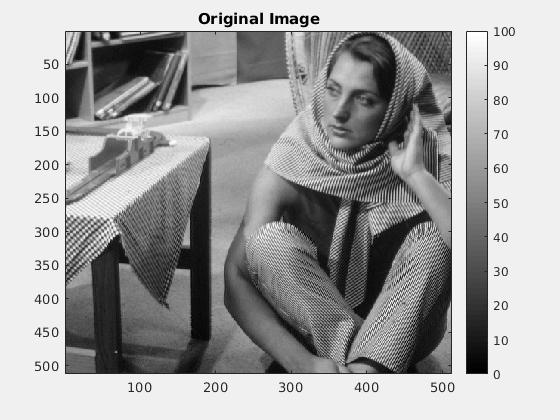
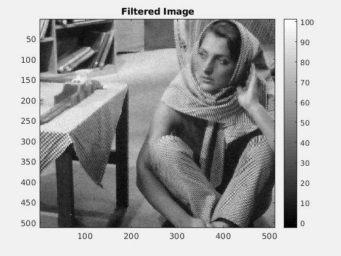
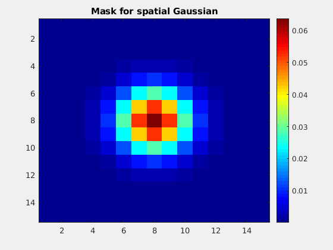
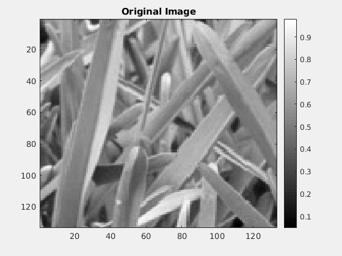
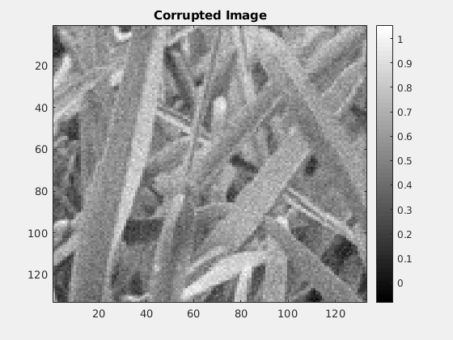
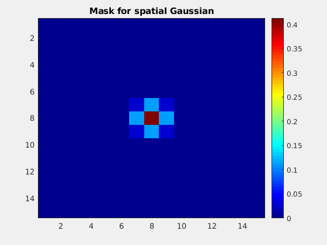
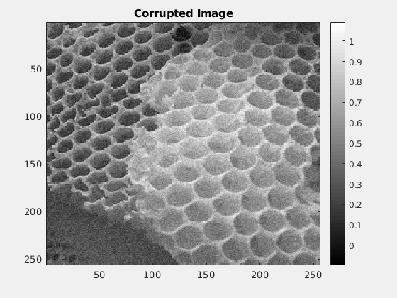
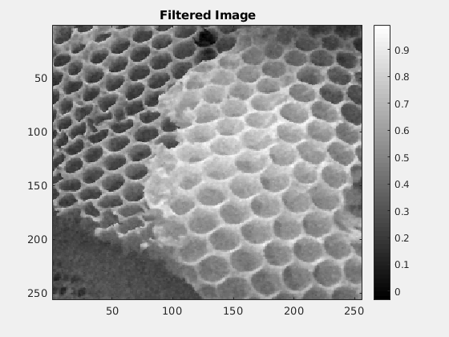
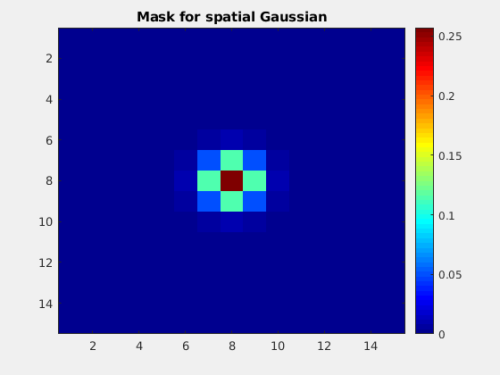

Contents
Assignment 2: Question 2:
This script performs bilateral filtering on some input images and automatically publishes the results in a formatted HTML document.
a) Barbara
  Optimal Values:
Spatial gaussian standard deviation: 1.580000 Intensity gaussian standard deviation: 13.760000 Corresponding value of RMSD is 3.292242
Other Readings:
For Case (i) : the value of RMSD is 3.292648 For Case (ii) : the value of RMSD is 3.287015 For Case (iii): the value of RMSD is 3.311545 For Case (iv) : the value of RMSD is 3.314419
b) grass
  Optimal Values:
Spatial gaussian standard deviation: 0.620000 Intensity gaussian standard deviation: 0.710000 Corresponding value of RMSD is 0.029726
Other Readings:
For Case (i) : the value of RMSD is 0.030546 For Case (ii) : the value of RMSD is 0.030027 For Case (iii): the value of RMSD is 0.029848 For Case (iv) : the value of RMSD is 0.029773
c) honeyComb
  Optimal Values:
Spatial gaussian standard deviation: 0.787000 Intensity gaussian standard deviation: 0.263000 Corresponding value of RMSD is 0.028727
Other Readings:
For Case (i) : the value of RMSD is 0.029630 For Case (ii) : the value of RMSD is 0.028751 For Case (iii): the value of RMSD is 0.028835 For Case (iv) : the value of RMSD is 0.028856
Elapsed time is 18.956524 seconds.